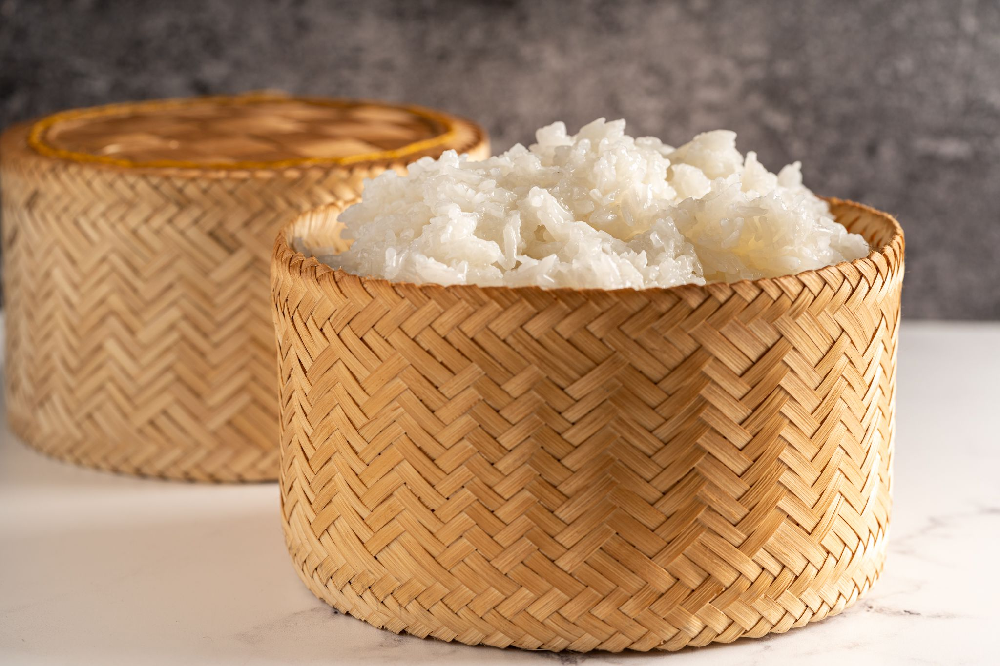

Sticky Rice

Quick and Easy Sticky Rice - no rice cooker needed!
Ingredients
- 1 Medium-sized pot
- 2 Cups white rice (short grain or calrose)
- 2 Cups water
Steps
- Rinse and drain rice 7 times
- Add water to pot and set heat on high (until boil)
- Once boiling, add rice into pot and set heat to low
- Cook for 10-minutes
- After 10-minutes, turn off burner and let rice sit for 5-minutes